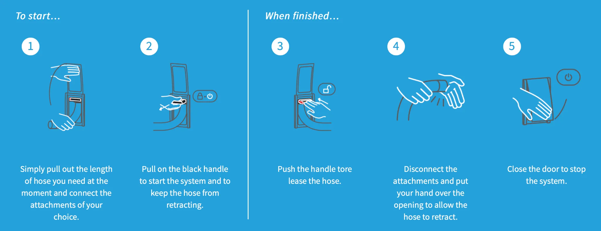

01
On-site repairs and troubleshooting
We diagnose and repair the problems homeowners notice most, including weak suction, intermittent operation, piping faults, inlet issues, clogging, leaking lines, and power-unit problems.
We diagnose and repair the problems homeowners notice most, including weak suction, intermittent operation, piping faults, inlet issues, clogging, leaking lines, and power-unit problems.
We install complete central vacuum systems for new homes, including inlet planning, pipe routing, rough-in preparation, power-unit selection, and practical system layout support.
We improve older systems by replacing aging components, extending the piping network, adding new suction points, and adapting layouts during renovations and home improvements.
We install modern retractable hose systems that improve storage, convenience, and daily usability while keeping the central vacuum experience cleaner and more streamlined.
Central vacuum systems can fail in different ways, and the symptoms often overlap. Our approach is to identify the actual cause of the problem, explain the next step clearly, and recommend the most practical repair or upgrade path for the home.
Since 1999, Mississauga Vacuum Center has installed central vacuum systems in more than 1,500 homes across the GTA. That experience supports everything from traditional full-system installations to retrofit upgrades, renovation work, and modern retractable hose projects.
Retractable hose systems are designed to keep the hose stored inside the wall piping instead of in a closet or utility area. When you want to clean, you pull out the hose length you need, lock it in place, and start cleaning. When you are finished, the central vacuum suction retracts the hose back into the wall for storage.
This style of system is popular because it keeps the home more organized, reduces hose handling, and makes daily cleaning faster and more convenient. It is ideal for new homes and can also be considered for some existing homes when the layout and access are suitable.
The hose stays hidden inside the wall system instead of taking up closet or garage space.
Pull out only the hose length you need, clean the area, and let the system retract it when you are done.
The system feels more streamlined and modern because the bulky hose is no longer carried from room to room.
It works especially well for new construction and selected retrofit projects where route access and pipe layout allow it.

This short video helps homeowners understand how the retractable hose is pulled out, used, and returned into the wall system.
Send us your photos, questions, and job details. We can review central vacuum issues, renovation plans, added suction points, retractable hose requests, or complete installation needs.
Use this form to send central vacuum questions, photos, renovation details, service requests, or installation inquiries. You can upload pictures of the power unit, piping, wall inlets, rough-in areas, or any issue you want us to review.